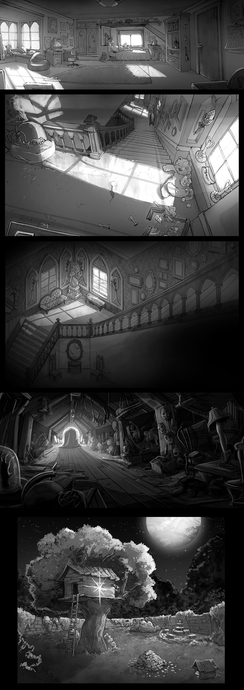
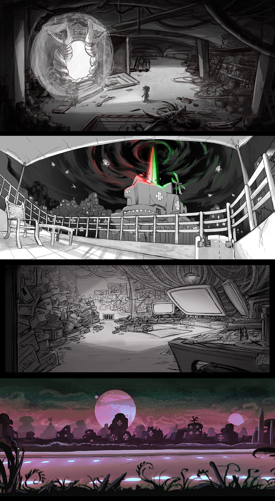
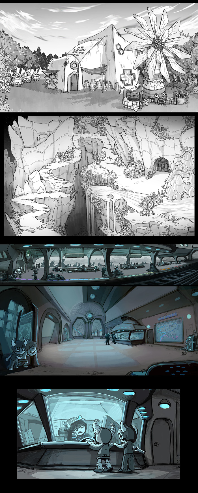
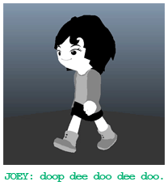
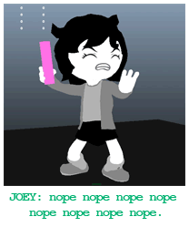
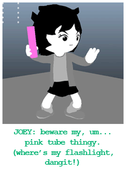

|
Homestuck Adventure Game Update
|
|
1. CONCEPT ART DUMP






|
2. NEW DEVELOPMENT PLANS
There are some updates to mention. Some changes to the plan. Exciting changes!
Over the last several months, we've been shifting the development operation from the previous studio over to What Pumpkin. We have both agreed it will be the best move to continue production in-house, given the future game development plans for the Homestuck property (more on that further down). So this means exactly what it sounds like. As of this moment, in addition to everything else What Pumpkin does, it is officially now a game dev studio as well. Pretty cool!
Setting up a game dev studio from scratch is fairly tricky however. Hiring new people, getting them up to speed, and setting up the infrastructure represents a bump in the road on our previously devised rollout schedule. The original plan had us testing the game by this point. Looks like testing within first half of next year is more likely. One major change to the plan I've settled on is to release the game episodically, to shorten the gap between now and when something is ready to be released. (Again, scroll down for more on that.)
But given that we have decided to pull a game dev studio out of thin air over the last couple months, it has gone alarmingly well. All the hiring was done quickly, and people have been cranking out great stuff (see samples above, all of which was done in-house). I'm pretty psyched about the new team!
3. MORE ABOUT THE GAME
I mentioned the game will be released in episodic installments, but before I address that, let me back up and talk about the game series more broadly. This may help you understand why it makes sense for WP to take the reins on development and start building up a studio capable of sustaining long term game dev projects.
Way back when I thought of the idea for this game, sort of in tandem with the plan to fund it through KS, I started thinking a little further beyond the KS and release of the game. Such as, what if it was funded well beyond the goal (it was), and what if upon release, the game was successful and well received? (Maybe it will be! I hope so.) Does it make sense to extend the series beyond one game? My verdict was an emphatic "PERHAPS". So as a result, from the start I conceived of a story that revolved around the idea of there eventually being two games, but without committing to any concrete plans to develop the second. (Yet!! We creep closer to that possibility by developing in-house, and nearing completion of game 1, ep. 1.)
The second game is not intended as a sequel though. It is meant to be a story told in parallel with the first. So when both games are finished, people will be able to play them in either order. As such, the conceit of the two games is to be loosely related to each other with one device in particular that ties them together: a flipping of the two protagonists.
4. HIVESWAP
This is the title of the first game. Like I said, the hook the two games share is that early on, the two main characters will trade places. So this means a human girl will have an adventure on Alternia (the troll planet), and a troll boy will have an adventure on Earth. Their objective (well, among others) is to get home. The first game follows the girl on Alternia, who's trying to get back to Earth. The stories of the two games won't have much to do with each other, except for sharing the device responsible for the swap, and the two heroes meeting each other's respective group of friends.
I also mentioned before that these stories will be loosely related to Homestuck canon. They are completely self-contained stories that won't depend on any familiarity with the existing storyline (I felt like this was important, since I'm anticipating that many people will stumble on this game who have never even heard of HS.) Still, the stories do actually fit into the canonical universe of HS, and fans of the comic will probably find it rewarding to see how it fits into canon and observe the various connections.
Since it fits into HS canon, there is the obvious question of "when", especially given that HS is about "end of the world" scenarios (both on Earth and Alternia), so unless there's some goofy alt-universe stuff going on, it can't take place after 2009. But there isn't goofy AU stuff going on. So it does take place some time pre-2009 on Earth, and pre-present day on Alternia. Beyond that, I won't be more specific. I'll let the games tell the story.
But I should also say, this doesn't mean the games are intended to be prequels. These aren't like "the origin of Sburb" games or anything like that. There's totally different stuff going on. They are their own stories that are meant to stand alone. My primary goal here is to make good games that speak for themselves and everyone can enjoy, not to create the absolute perfect complements to a huge existing storyline.
5. EPISODES
When I say "first game" and "second game", I mean those will be two distinct storylines that each consist of several episodes to be released in sequence. Four episodes per game is looking likely. The fact that there will be multiple installments won't change much for backers. Anyone who backed will be entitled to each download for the first game. I'm sure there will be other questions that come up as a result of this release model, such as how physical copies are handled, but just keep in mind that we'll be working things out to stay favorable to backers. We'll have more answers as things take shape.
Designing the story around two games is an old idea, based on having a plan in place to continue the series if the demand is there. But releasing each one episodically is a new idea, based more on the emerging realities of production. I think it's the right call, both to get something out sooner, but also I think it will add some dimension to the story itself and the way it's received. Much of the fun for Homestuck readers was in following an ongoing story, getting together with other readers and discussing new developments. So releasing the game like this should preserve that part of the experience somewhat. Leaving some space between episodes should build some anticipation for what happens next. I suspect a lot of people will enjoy the story more this way.
Thanks for hanging in there. Things have been taking shape slowly, but I think the end product(s) will be a lot stronger for taking the time to make these adjustments and get the right strategy in place. I'm feeling pretty confident we're making a good game here!
|
|
|
|